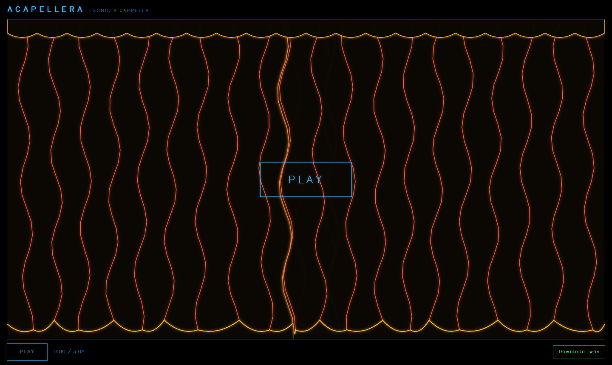

Acapellera
好きな曲をドロップすると、12 人の歌い手がその曲をアカペラで歌い直します。
声はすべて、肺・声帯・のど・口をシミュレーションして作った合成音声です。元の録音は一切流れません。

舞台
| パート | 歌うもの | 元にする音 |
|---|---|---|
| リード | 音の高さで決まる言葉（ド=mi … シ=ma） | 歌声で、その時いちばん強い音 |
| ハモリ do・ree | do、ree | 歌声で 2 番目・3 番目に強い音 |
| ドラム bah・pa・si | 短い bah、pa、si | ドラムの低・中・高の音の鳴り始め |
| コーラス隊 | zoo/di、no/ku、ru/mi | ベース・ギター・ピアノで、その時強い 2 音（低い方と高い方） |

曲ができると開演ブザーが鳴り、Play で幕が開き、照明の音とともに奥の段、ハモリ、リードの順に登場します。サビでは全員の声が大きくなり、リードの姿も大きくなります。歌い終わると幕が閉じ、できた歌を wav でダウンロードできます。
仕組み
同じ音程が続くところは、歌声の音量の落ち込みと新しい歌い出しの強さを見て、「伸ばす」か「言い直す」かを機械的に決めています。音源分離で一瞬声が途切れたところを、言い直しと取り違えないためです。
動かし方
このページはアプリの紹介です。ページ自体は何にも接続せず、曲を受け取ることもありません。アプリは自分の PC で動かします。処理の重い部分（分離・採譜・合成）は、同じ PC でも、ssh でつながる GPU サーバでも動きます。
git clone https://github.com/YUSEITASHIRO/acapellera
cd acapellera
bun install
bash acapellera/server/setup.sh # 処理側の Python 環境（初回のみ）
bash acapellera/server/setup_engine.sh # CHIMERA の合成エンジン（初回のみ）
python acapellera/launch.py # GPU サーバで処理するときは --remote詳しい手順（Windows、GPU サーバの設定、任意の効果音）は acapellera/README.md にあります。
ドロップした曲と、そこから作った歌は、自分の PC と自分のサーバの中にだけ置かれます。どれも git には入りません。
クレジット
合成音声・エンジン・Web アプリは CHIMERA（Jameson Hodge、MIT ライセンス）の上に作られています。分離は demucs（MIT）、採譜は basic-pitch（Apache-2.0）、区間は SongFormer（CC BY 4.0）を使っています。
効果音：開演ブザーと照明の音は OtoLogic（CC BY 4.0）。客席のざわめきと幕の音は、配布元の規約に従い同梱していません（入手先は README に記載）。